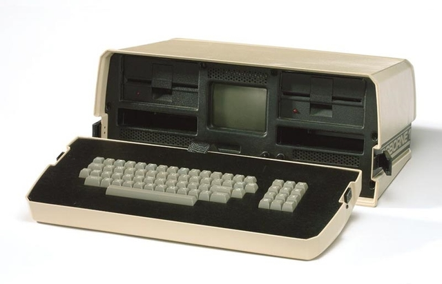

El disco almacenó 5 megabytes de datos, cinco veces más que la mayoría de los discos comunes de la época.
Desarrollado por Philips, el primer disco óptico de almacenamiento de datos tenía una capacidad de almacenamiento 60 veces mayor que un disco flexible de 5 ".
John Shoch, del centro de investigación de Xerox, en Palo Alto, inventó la computadora "Worm" la cual traía un programa de alto desempeño para la búsqueda de información.
con éxito comercial, presentada en la Feria de Computación de la Costa Oeste. Fue lanzada por Osborne Computer Corporation.Este ordenador pesaba 10,7 kg, costaba US$ 1,795 y corría el entonces popular sistema operativo CP/M 2.2.. Sus principales deficiencias eran la diminuta pantalla de 5 pulgadas (13 cm) y los discos flexibles que no tenían suficiente capacidad para aplicaciones de negocios. Su diseño le debe mucho al de la Xerox NoteTaker, un prototipo desarrollado en en el Xerox PARC en 1976.
Compaq Computer Corporation introdujo su primer computadora personal (PC), que usaba el mismo software que la PC de IBM. Microsoft anunció el procesador de textos Word, llamado anteriormente Multi-Tool Word. Ademas anunció el lanzamiento del sistema operativo Windows.
El MIDI (Musical Instrument Digital Interfaz) es mostrado en la primera muestra North American Music Manufactures, en Los Angeles .
surge la pc . IBM presenta su primera computadora personal y revolucionada a el sector informativo. en vista de la acelerada marcha de la microelectronica, la sociedad industrial se ha dado a la tarea de poner tambien a esa altura el desarrollo de software y los sistemas con que se manejan las computadoras Internet avanzó otro gran paso. En las Universidades de Princeton, Pittsburgh, California, Illinois y Cornell. Con capacidad para almacenar 550Mb de informacion, los nuevos CD- ROMs expandieron el mercado de CDS de música. David Miller, de AT&T Bell Labs, patentó el transitor óptico SEED (Self-ElectroOptic-Effect Device), un componente digital para computadoras. Daniel Hillis, de la Thinking Machines Corporation, impulsó la inteligencia artificial cuando desarrolló el concepto compacto de conexión paralela. IBM y MIPS desarrollaron las primeras estaciones de trabajo PC/RT y R2000 basadas en RISC. compaq desbancó a IBM en el mercado cuando anunció el Deskpro 386, la primer computadora en el mercado a usar el nue
BM introdujo al mercado las computadoras PS/2, fabricadas con drives de 3 ". William Atkinson, ingeniero de Apple, proyectó HyperCard, un software que simplificaba el desarrollo de aplicaciones domésticas.

|